MUSE: A Multi-agent Framework for Unconstrained Story Envisioning via Closed-Loop Cognitive Orchestration
W. Sun, Z. Wang, Z. Hu, C. Wang, H. Li, W. Chen.
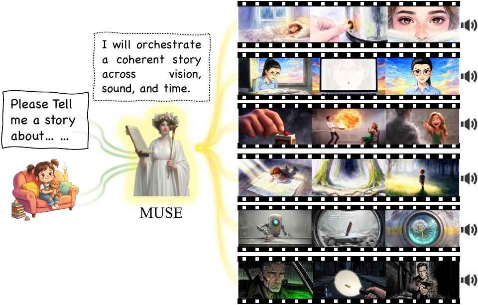
publications
This page is organized like an academic portfolio rather than a raw paper list. Full BibTeX is available here.
W. Sun, Z. Wang, Z. Hu, C. Wang, H. Li, W. Chen.

Q. Zhang, C. Wu, W. Sun, H. Liu, et al.
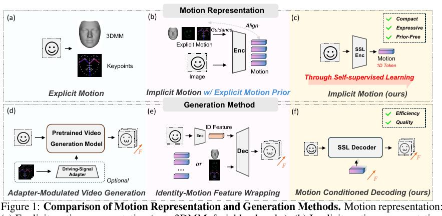
Xiangchen Yin, Wenzhang Sun, Jiahui Yuan, Zijie Liu, Yinda Chen, Wei Li, Dachun Kai, Chunfeng Wang, Xiaoyan Sun.
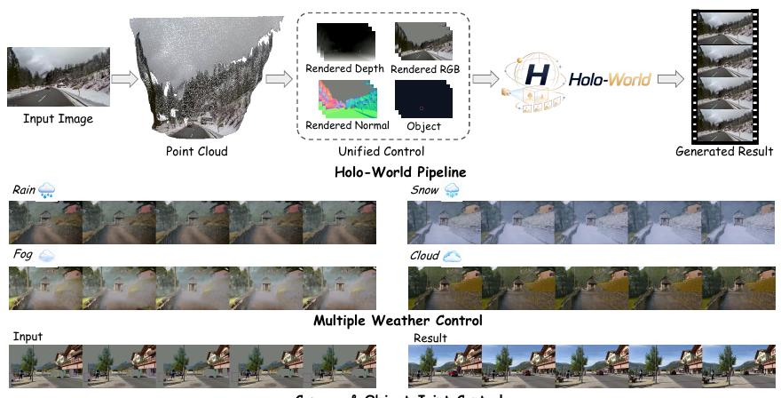
Z. Hu, Y. Zhao, Y. Peng, W. Sun, et al.
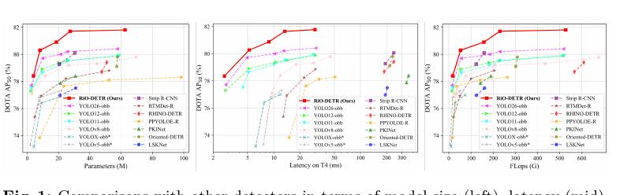
Yujia Chen, Rui Sun, Wangkai Li, Huayu Mai, Bingzhou Wang, Zhangyu He, Aibing Li, Wenzhang Sun, Tianzhu Zhang.
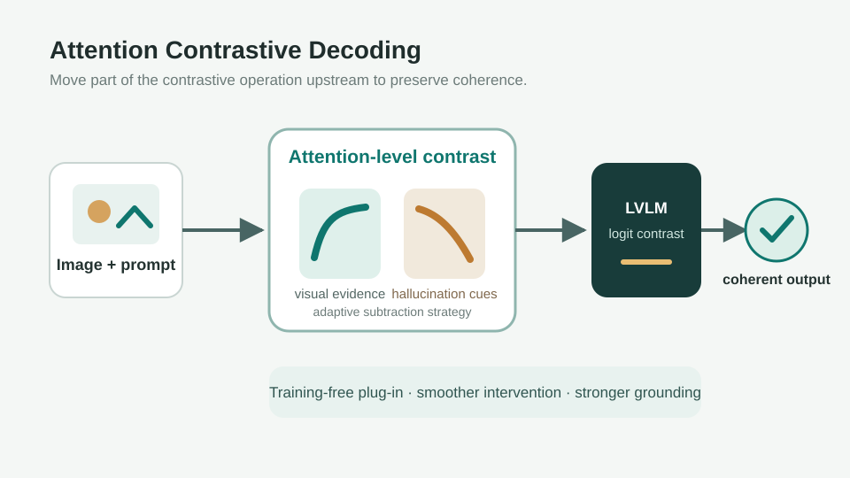
Yujia Chen, Rui Sun, Zhaoyang Li, Wangkai Li, Huayu Mai, Bingzhou Wang, Aibing Li, Wenzhang Sun.
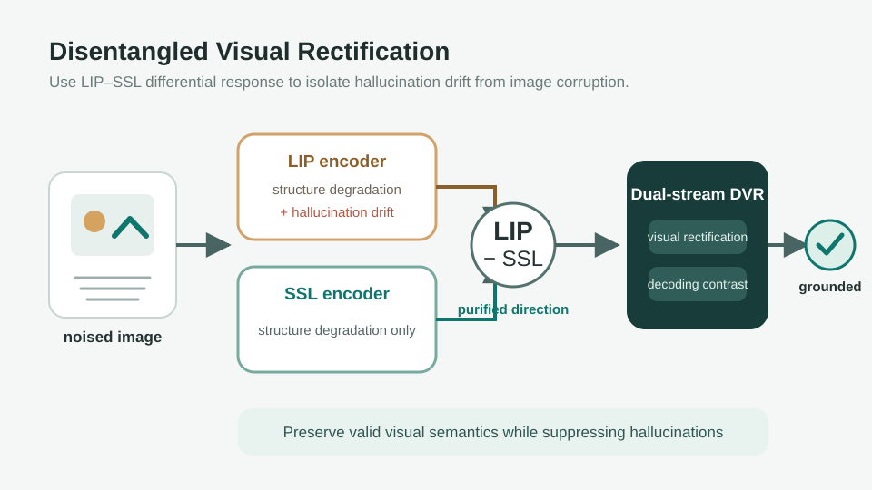
Zhangchi Hu, Wenzhang Sun, Xiangchen Yin, Jiahui Yuan, Chunfeng Wang, Hao Li, Kun Zhan, Xiaoyan Sun. Project Leader.
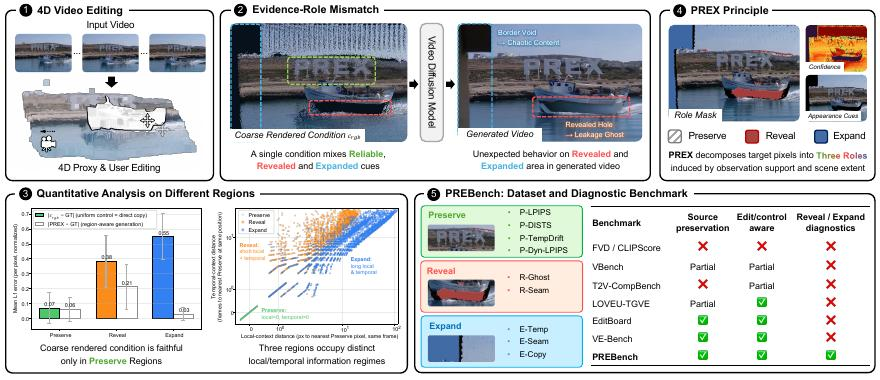
Wenzhang Sun, Chunfeng Wang, Xiangchen Yin, Yujia Chen, Hao Li, Kun Zhan.
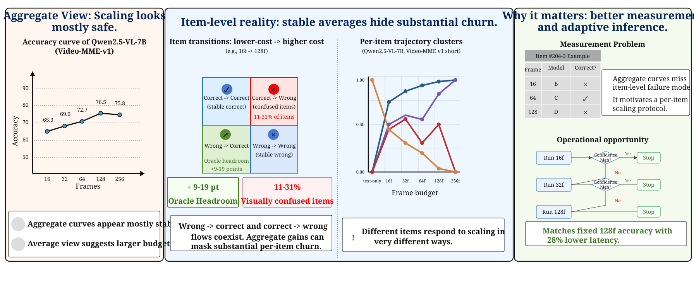
Q. Hou, W. Sun, C. Zeng, C. Wang, H. Li, J. Cui.
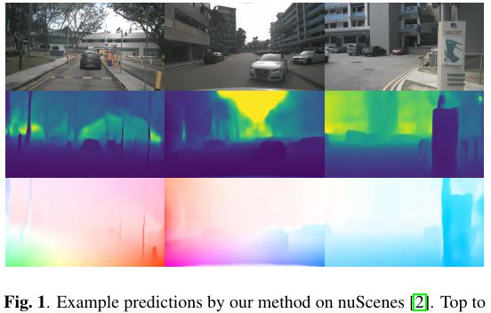
A. Ying, W. Sun, C. Zeng, C. Wang, H. Li, J. Cui.
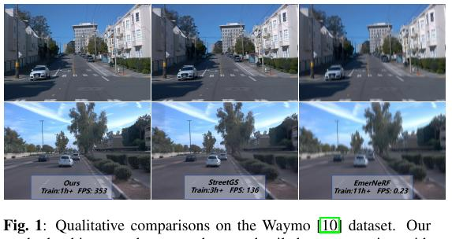
W. Sun, Q. Hou, D. Di, J. Yang, Y. Ma, J. Cui.
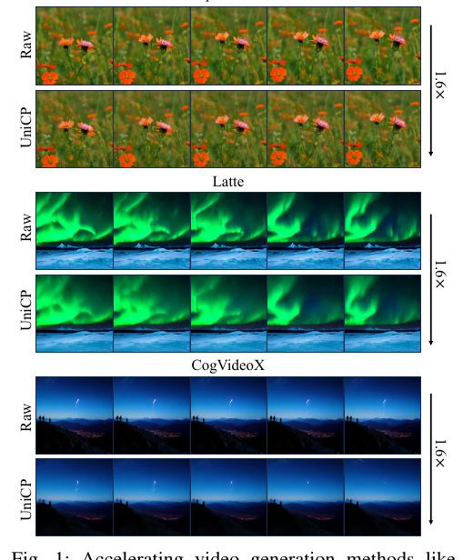
X. Yin, J. Yuan, Z. Hu, W. Sun, et al.
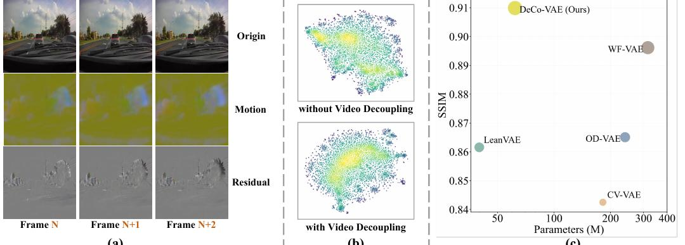
Jiahui Yang, Donglin Di, Baorui Ma, Jianxun Cui, Xun Yang, Yongjia Ma, Wenzhang Sun, Wei Chen, Zhou Xue, Meng Wang, Yebin Liu.
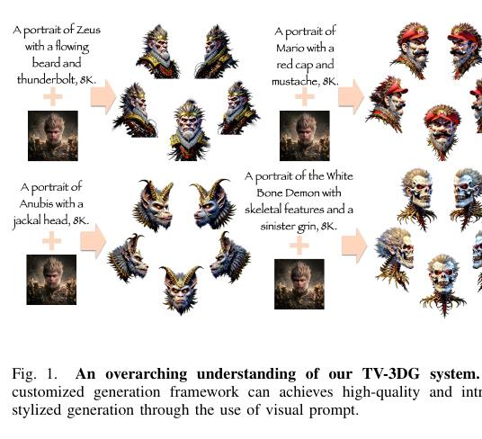
D. Di, H. Feng, W. Sun, Y. Ma, et al.
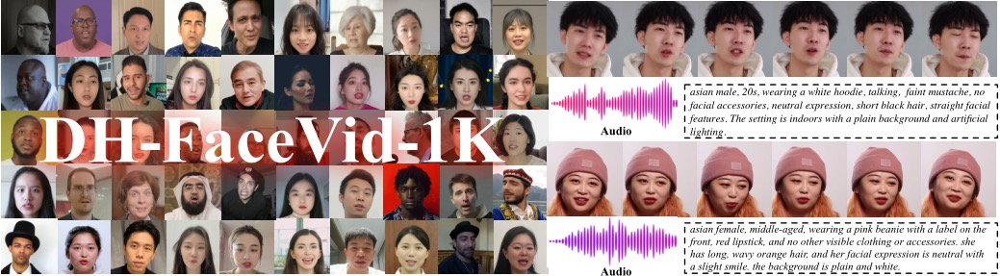
H. Liu*, W. Sun*, Q. Zhang, D. Di, et al.
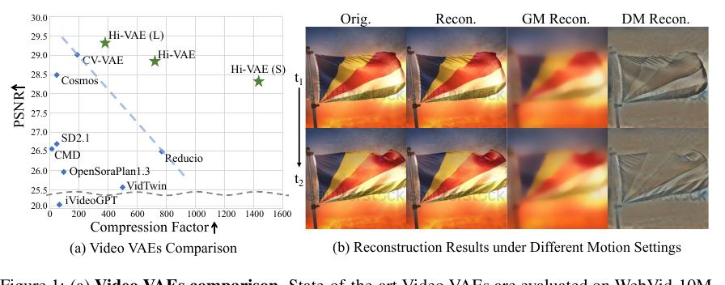
J. Wang*, W. Sun*, M. Li, Y. Zheng, et al.
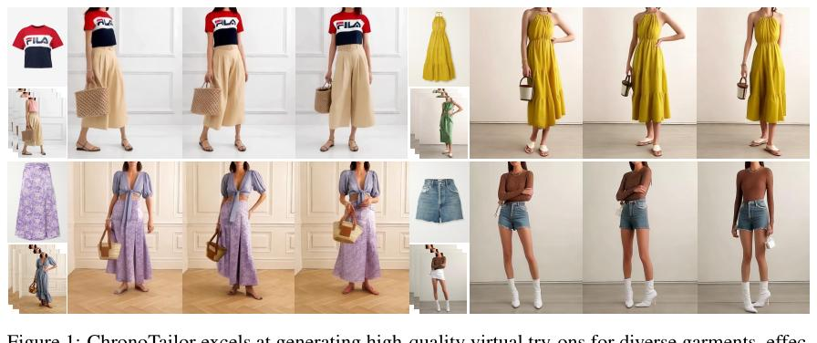
H. Liu, W. Sun, D. Di, S. Sun, J. Yang, C. Zou, H. Bao.
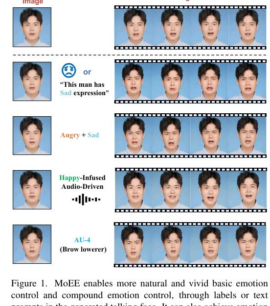
W. Sun, X. Li, D. Di, Z. Liang, Q. Zhang, H. Li, W. Chen, J. Cui.
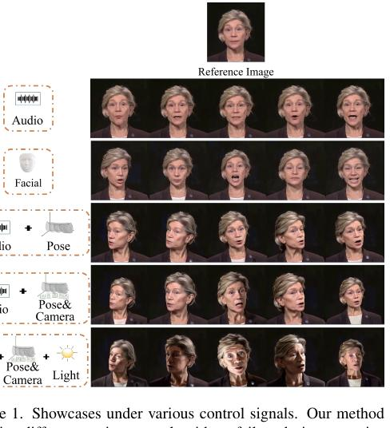
W. Sun, Y. Che, H. Huang, Y. Guo.
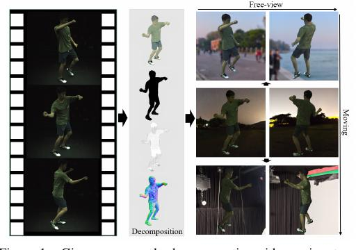
W. Sun, L. Wang, S. Ma, Q. Ma.
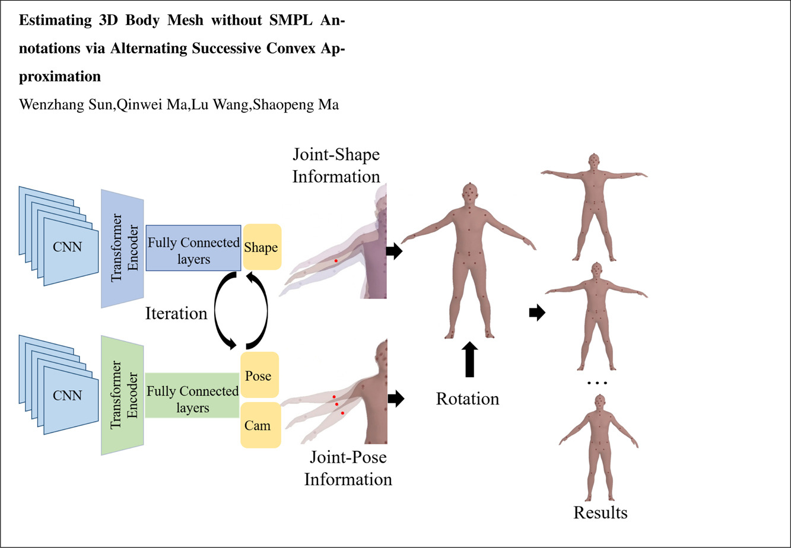